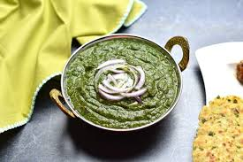

Curry

Mustard Leaf Curry
A dish that is both a warm comforting food as well as a healthy choice.
You can't go wrong ordering this dish at any restraunt. Made with mustard
leaves and multiple spices fried in ghee to keep you coming back
for more. This blended dish that can help you get your greens and enjoy
the process will become a new staple choice in your kitchen.
What You'll Need
- 1 Bunch Mustard leaves
- 1/2 bunch of spinich leaves
- 2 chili peppers
- 1 clove of garlic
- 1 inch of ginger
- 1 medium tomato
- 1 tsp coriander powder
- 1/2 tsp salt (or to taste)
- 1 tsp garam masala
- 3 tbsp maise flour
- 1/2 cup of water
- 1 tbsp ghee
- Wash the greens thoroughly and separate the leaves.
-
Add greens, tomatoes, garlic, ginger, salt, and chili to the
Instant Pot. Put the vent to “Seal” Mode. Set the pressure to “High for 5 minutes.”
For pressure cooking on the stove top, 2 whistles should work.
- Blend to paste.Blend to paste.
- Add maize flour, coriander powder, and garam masala.
- Let it simmer for 5-10 minutes until the consistency is thick.
-
In a small pan (called tadka pan), add Ghee/Plant-based oil, red chili, and hing.
Add minced garlic. Stir for a few seconds until garlic turns golden brown.
Add on the top of blended Saag and serve.